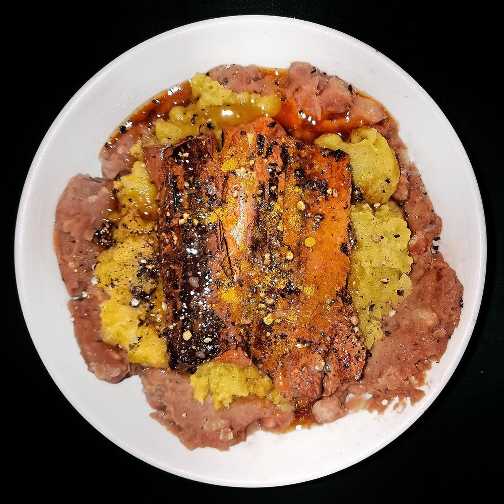

Rajma Madra
red kidney beans in a thick soured-yogurt gravy, the dham version that eats richer than chana madra

Start the day before. The soaking alone is 10 hr, against 80 min of actual work.
Contains: milk
Checked against the ingredient list for ten allergens: milk, egg, fish, crustaceans, tree nuts, peanuts, sesame, mustard, soy and gluten. Brands vary, so read the label on anything new to you.
Ingredients
Quantities for 6.
- 250g, soaked overnight Rajmathe small dark Chamba beans if you can get them
- 500g full-fat, whisked smooth Yogurt
- 5 tbsp Ghee
- 1 tbsp Besaninsurance against splittingoptional
- 1 tsp Cumin Seeds
- 2, cracked Black Cardamom
- 4 green Cardamom
- 1 piece, 3cm Cinnamon
- 4 Cloves
- 2 Bay Leaf
- 1/4 tsp Asafoetidacompounded-free hing keeps the dish gluten-free
- 2 tsp Coriander Powder
- 1 1/2 tsp Fennel Powder
- 1 tsp Dry Ginger Powder
- 1/2 tsp Turmeric
- 1 tsp Kashmiri Chilli
- 1/2 tsp Garam Masala
- to taste Salt
- 700ml Water
Cookware
stovetop, kadhai, pressure cooker
Before you start
- Soak the rajma at least 10 hours, ideally overnight. Beans that have not swollen to twice their size will not cook through.
- Bring the yogurt to room temperature and whisk it with the besan until it pours like thin cream.
- Have the whole spices measured into one small bowl - once the ghee is hot they all go in together.
Method
- Pressure cook the drained rajma with 700ml fresh water and 1 tsp salt for 6 to 7 whistles, then let the pressure fall naturally. A bean should collapse when pressed, with the skin still intact.Never add the yogurt to half-cooked beans. Acid stops rajma softening dead.
- Heat the ghee in a heavy pan until it shimmers. Add cumin, black cardamom, green cardamom, cinnamon, cloves and bay leaves; they will foam and smell sweet within 30 to 40 seconds.
- Add the asafoetida, then pull the pan off the flame and let it cool a full minute.Hot ghee plus cold yogurt equals a grainy, broken gravy. The pause is not optional.
- Return the pan to the lowest heat and pour in the yogurt, stirring without pause for 8 to 10 minutes until it thickens and the raw sourness cooks off.
- Stir in the coriander, fennel, dry ginger, turmeric and kashmiri chilli. Cook 3 minutes until the gravy turns a deep ochre and glossy.
- Tip in the rajma with about 200ml of its cooking liquor and season with salt.
- Crush a small ladleful of the beans against the side of the pan and stir back in - this thickens the gravy without flour.Six or seven crushed beans is plenty; any more and you lose the texture.
- Simmer uncovered 25 minutes on low, stirring often, until the ghee separates and rises in a clear rim.
- Sprinkle over the garam masala, cover and rest 10 minutes off the heat before serving with steamed rice.
Storage
Refrigerates well for 3 days and thickens as it sits. Loosen with hot water and reheat on the lowest flame, stirring; do not let it boil hard or the yogurt will separate.
Nutrition Low estimate
Medium protein: 13 g a serving, 17% of the calories
| Per serving142 g | Per 100 g | |
|---|---|---|
| Calories | 307 kcal | 217 kcal |
| Protein | 13.4 g | 9 g |
| Carbohydrate | 33.0 g | 23 g |
| of which sugars | 5.1 g | 4 g |
| Fibre | 7.8 g | 6 g |
| Fat | 14.5 g | 10 g |
| of which saturated | 8.5 g | 6 g |
| of which unsaturated | 5.1 g | 4 g |
Ingredients given to taste count as zero, so the real figures run a little higher. Nearest database match used for asafoetida, garam masala. Estimated from raw ingredients using USDA FoodData Central.
Times, yields, allergens and nutrition are guidance. Use your own judgement on doneness and on storing. More in About.